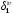
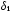

Intrinsic topological state
Intrinsic topological state [tc00,wfz04b].
Equation 1. Intrinsic topological state
where
Li is the principal quantum number,
 is the number of valence electrons, and
 is the number of sigma electrons of the
ith atom
ai.